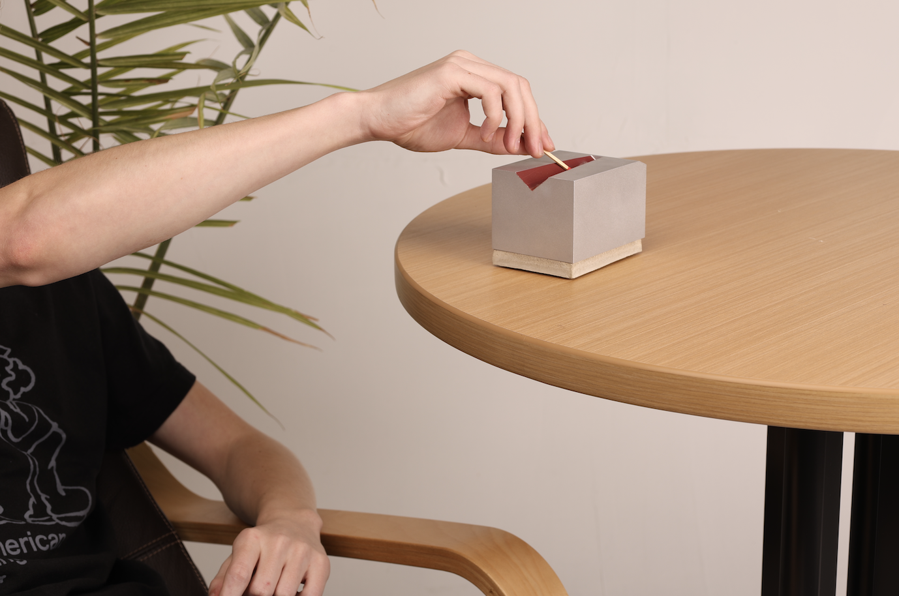
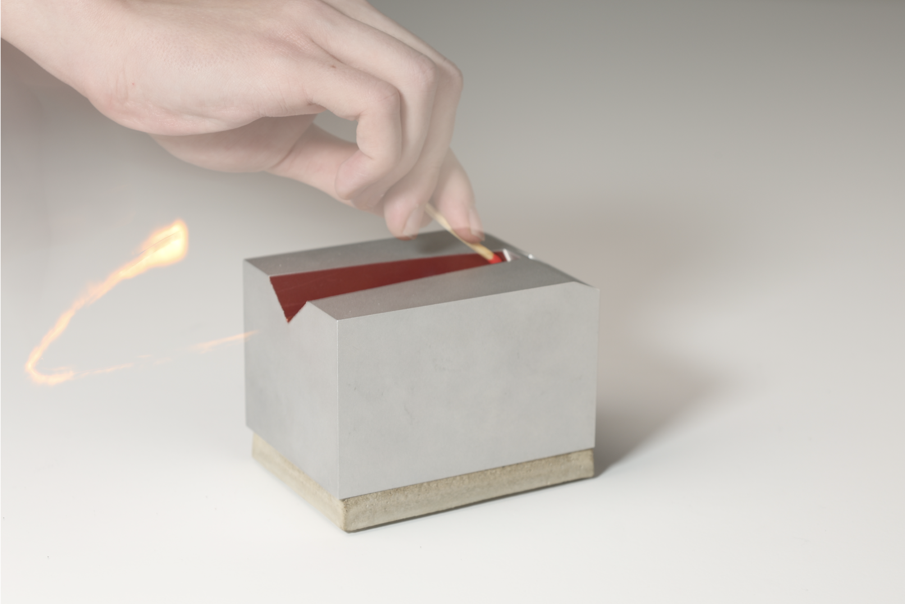
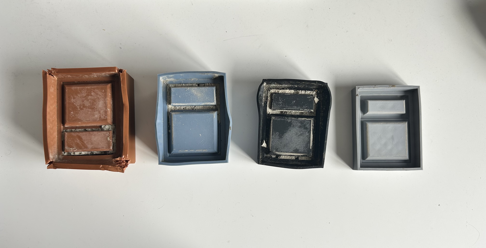
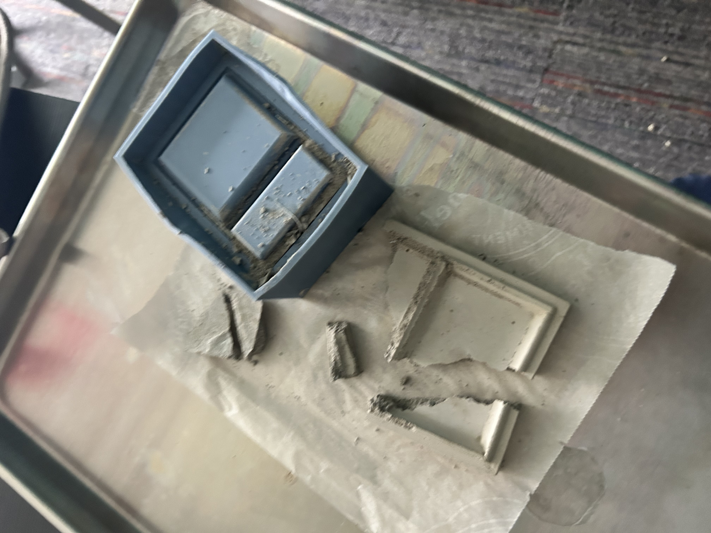
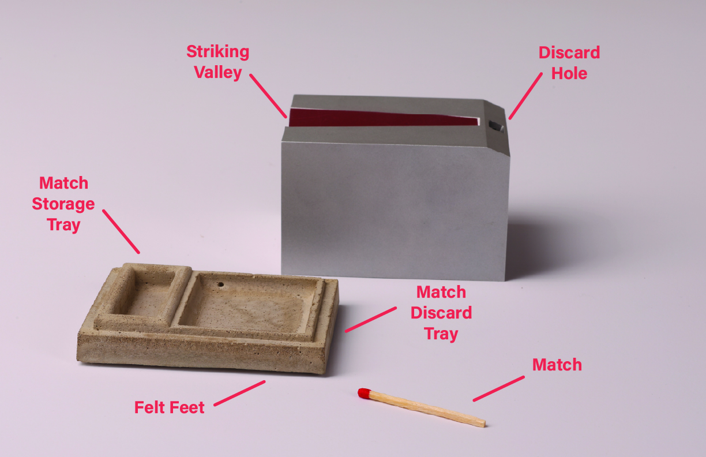
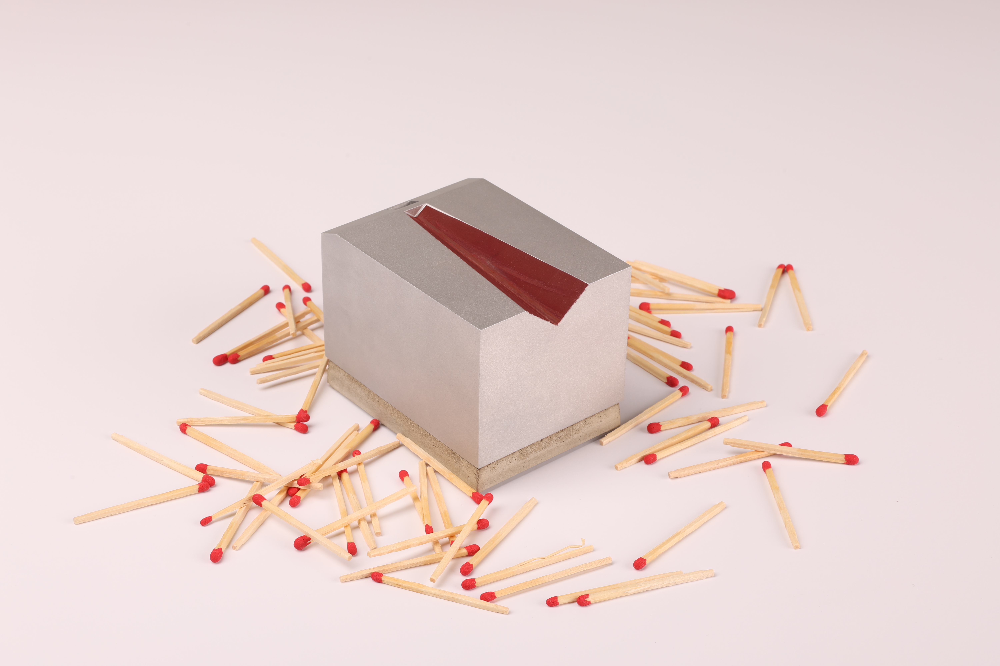

A match holder, striker, and disposal system designed to sit on your desk or coffee table. I wanted lighting a match to feel considered rather than frustrating.

Overview
This project came out of a 10 week homegoods studio class. The brief was simply to design a homegood. I became interested in the match as an object because using a traditional matchbox is actually pretty frustrating the tray slides out unexpectedly, the striking surface is hard to find, and there is nowhere to put a spent match. The design question I kept coming back to was: how can I maximize friction within the product to minimize friction between the product and the user?
CinderBlock handles the whole process in one object. The aluminum lid has a striking valley that guides your hand naturally. Spent matches drop through a discard hole into the concrete base, which also holds a match storage tray. The two parts lift apart cleanly and the concrete base has felt feet at the bottom.

Process and Manufacturing
With only 10 weeks, manufacturing had to be considered from day one. Lead time on the CNC machining and concrete casting meant committing to the form early. The concrete base went through multiple 3D printed mold iterations, each with different print settings and dimensions, before I got a version that released cleanly and held the tray geometry correctly.
I simplified the aluminum profile to reduce the number of machining operations and keep costs realistic. The striking valley is the one feature I kept pushing on because it is the whole functional logic of the object. Getting the angle right so it actually guides the match took a lot of physical testing before committing to a final dimension.


Components

